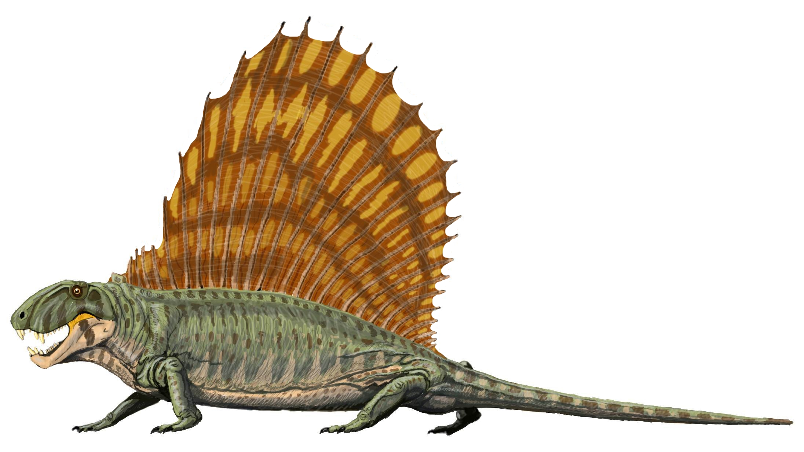
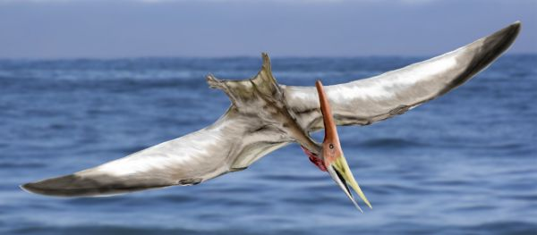
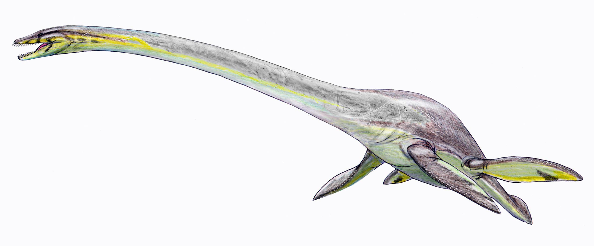

Omnivores
OmnivoresReptiles that predate the dinosaurs, such as Dimetrodon, are often mistaken for dinosaurs, even though they went extinct 40 million years before the appearance of the first dinosaurs. Though they aren't direct ancestors to mammals, non-mammalian synapsids like Dimetrodon are more related to mammals, and by extension to us, than to modern reptiles.
Despite being often called "flying dinosaurs", pterosaurs aren't classified as dinosaurs. The term "dinosaur" is used for the descendants of the last common ancestor of the Saurischia and Ornithischia clades, which don't include pterosaurs.
Just like with pterosaurs, marine reptiles that coexisted with the dinosaurs, such as Elasmosaurus, aren't classified as dinosaurs because the term "dinosaur" is used for the descendants of the last common ancestor of the Saurischia and Ornithischia clades, which don't include marine reptiles.
  